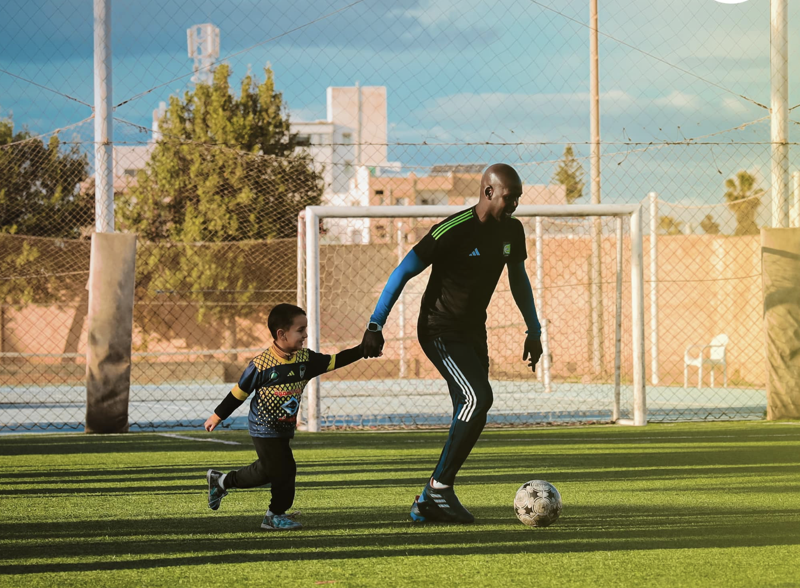
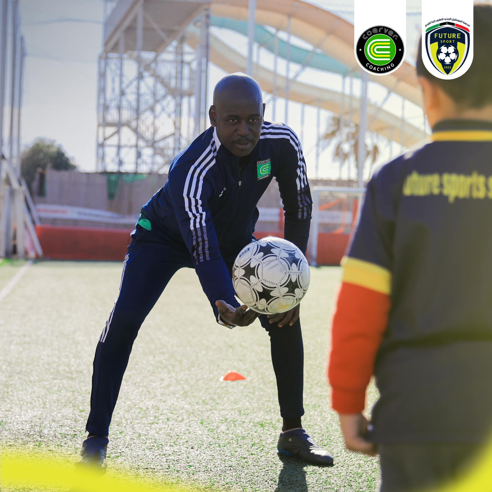
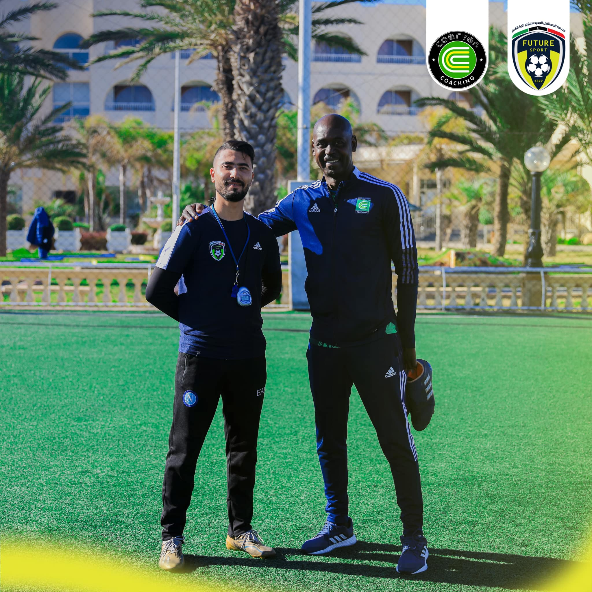
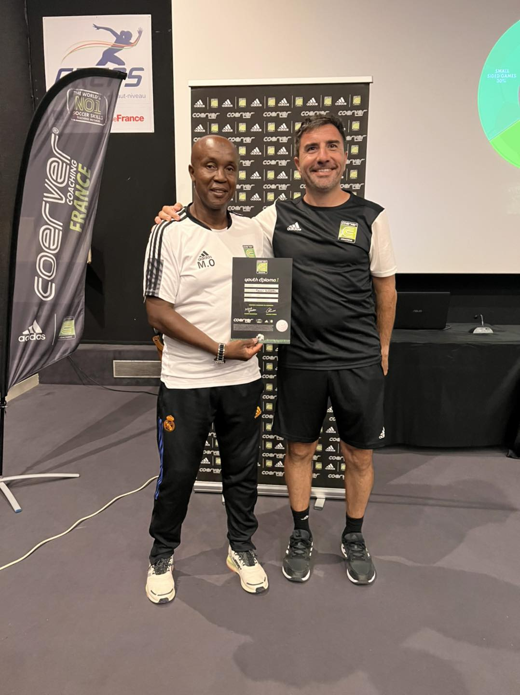

NOS
ENTRAINEURS
Une equipe passionnee, certifiee par Coerver® International.
Des professionnels au service du developpement de vos enfants.
UNE EQUIPE AU SERVICE
DE VOS ENFANTS
Coerver® Coaching Tunisie est fonde et dirige par des professionnels du football formes et certifies par Coerver® International. Notre equipe combine expertise technique internationale, experience du football professionnel tunisien et une passion sincere pour le developpement des jeunes joueurs.
Chaque coach de notre academie maitrise le curriculum officiel Coerver® et applique la methode dans chaque seance avec rigueur et bienveillance. Nous ne sommes pas qu'une academie — nous sommes une famille.

 Coerver® Youth Diploma
Coerver® Youth Diploma
 Coerver® International
Coerver® International
MOUNIR
BEN ROMDHAN
Mounir Ben Romdhan est le fondateur et directeur general de Coerver® Coaching Tunisie. Passionne par le developpement du football tunisien, il a fait le choix d'implanter la methode d'entrainement N°1 au monde en Tunisie pour offrir a nos jeunes les meilleures conditions de progression.
Forme directement par Coerver® International, Mounir est titulaire du Coerver® Youth Diploma — la certification officielle qui garantit la maitrise complete du curriculum Coerver®. En 2022, il represente la Tunisie a la Coerver® Conference internationale de Madrid aux cotes des plus grandes federations et academies du monde, en partenariat avec Adidas et LaLiga.
CERTIFICATIONS & DISTINCTIONS
SALIM
CISSÉ
Salim Cissé est le Directeur Sportif de Coerver® Coaching Tunisie. Fort d'une carriere de joueur professionnel de plus de 20 ans dans le football tunisien, il apporte a notre academie une expertise du haut niveau que peu d'entraineurs peuvent offrir.
Ayant porte les couleurs de nombreux clubs tunisiens et accumule une experience de competition au plus haut niveau, Salim conait mieux que quiconque les exigences du football professionnel. Sa mission chez Coerver® Tunisie : transmettre cet etat d'esprit de champion aux jeunes joueurs de l'academie, un par un.
PARCOURS & EXPERTISE



COACH
COERVER®
Coach certifie par Coerver® Coaching, notre troisieme entraineur encadre quotidiennement les jeunes joueurs de l'academie avec rigueur et passion. Forme directement a la methode Coerver®, il applique le curriculum officiel dans chaque seance pour garantir la progression de chaque enfant.
CERTIFICATIONS
UNE FRANCHISE OFFICIELLE
RECONNUE MONDIALEMENT
Coerver® Coaching Tunisie n'est pas une academie ordinaire. Nous sommes une franchise officielle de Coerver® International — certifiee, formee et reconnue par l'organisation mondiale. Voici la preuve.
Coerver® Conference Internationale — Madrid
Notre fondateur Mounir Ben Romdhan represente officiellement la Tunisie a la conference annuelle Coerver® a Madrid, aux cotes d'Adidas et LaLiga.

Coerver® Youth Diploma
La certification officielle delivree par Coerver® International, attestant de la maitrise complete du curriculum et de la methodologie Coerver®.
Membre du Reseau Coerver® Mondial
Coerver® Tunisie fait partie du reseau officiel de 50+ pays et est en contact direct avec les responsables de Coerver® International.

Connexion avec Coerver® France
Nos joueurs et coachs ont acces au reseau Coerver® europeen, avec des opportunites de stages et formations en France et dans le monde.
NOS COACHS SUR
LE TERRAIN
Chaque seance est une opportunite de transformer un jeune joueur. Nos coachs sont presents, engages et passionnes — chaque minute, chaque entrainement.